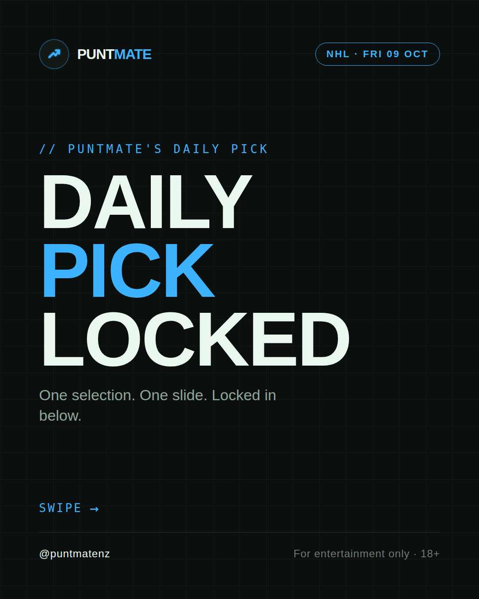
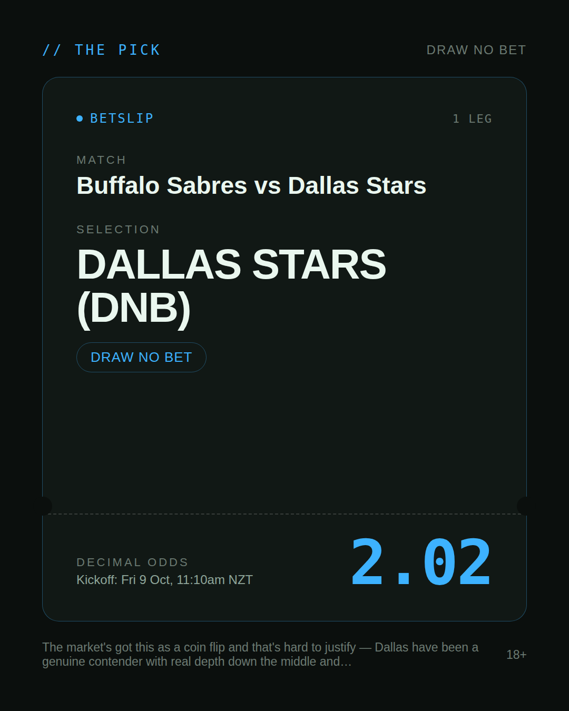
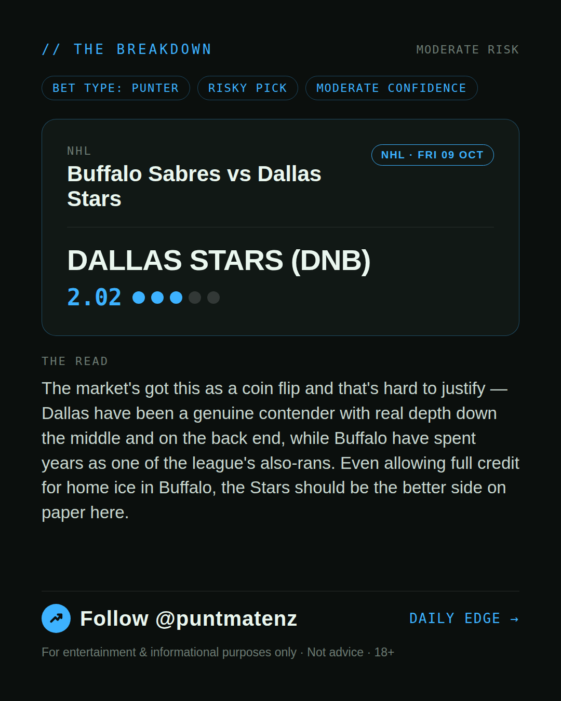
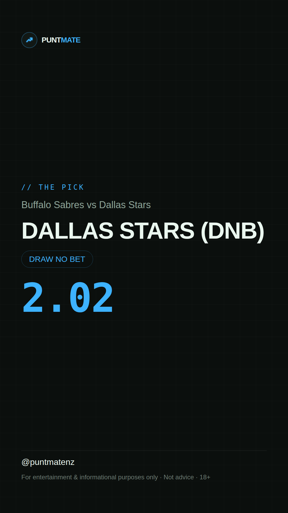

*🎯 PUNTMATE NZ — NHL* 🏟 Buffalo Sabres vs Dallas Stars *PICK:* DALLAS STARS (DNB) *ODDS:* 2.02 (Draw No Bet) *BET TYPE: PUNTER* _The market's got this as a coin flip and that's hard to justify — Dallas have been a genuine contender with real depth down the middle and on the back end, while Buffalo have spent years as one of the league's also-rans. Even allowing full credit for home ice in Buffalo, the Stars should be the better side on paper here._ ────────────────── 📲 Join Telegram for daily picks ⚠️ For entertainment & informational purposes only. Not advice. 18+.
🎯 NHL — Buffalo Sabres vs Dallas Stars DALLAS STARS (DNB) @ 2.02 (Draw No Bet) BET TYPE: PUNTER Solid touch here. Not a lock, but the value's real and the form backs it up. The market's got this as a coin flip and that's hard to justify — Dallas have been a genuine contender with real depth down the middle and on the back end, while Buffalo have spent years as one of the league's also-rans. Even allowing full credit for home ice in Buffalo, the Stars should be the better side on paper here. Follow for daily value picks → @puntmatenz ⚠️ For entertainment & informational purposes only. Not advice. 18+. #PuntmateNZ #SportsBetting #NZTAB #NHL
| has_pick | True |
| pick_id | 2026-10-08_Buffalo_Sabres_vs_Dallas_Stars |
| run_id | 37705887176 |
| generated_at | 2026-10-08T00:07:49.722175+00:00 |
| post_date | 2026-10-08 |
| match | Buffalo Sabres vs Dallas Stars |
| sport | icehockey_nhl |
| sport_label | NHL |
| market | Draw No Bet |
| selection | DALLAS STARS (DNB) |
| odds | 2.02 |
| bet_type | PUNTER_BET |
| bet_type_label | BET TYPE: PUNTER |
| bet_type_reason | Solid touch here. Not a lock, but the value's real and the form backs it up. The market's got this as a coin flip and that's hard to justify — Dallas have been a genuine contender with real depth down the middle and on the back end, while Buffalo have spent years as one of the league's also-rans. Even allowing full credit for home ice in Buffalo, the Stars should be the better side on paper here. |
| classification | RISKY_PICK |
| risk | RISKY_PICK |
| confidence | MODERATE |
| confidence_label | MODERATE |
| final_explanation | The market's got this as a coin flip and that's hard to justify — Dallas have been a genuine contender with real depth down the middle and on the back end, while Buffalo have spent years as one of the league's also-rans. Even allowing full credit for home ice in Buffalo, the Stars should be the better side on paper here. |
| public_caution | Keep this one light — the value's there but so is the uncertainty. |
| theme | night |
| carousel_paths | ['data/review/2026-10-08_Buffalo_Sabres_vs_Dallas_Stars/cover.png', 'data/review/2026-10-08_Buffalo_Sabres_vs_Dallas_Stars/tip.png', 'data/review/2026-10-08_Buffalo_Sabres_vs_Dallas_Stars/breakdown.png'] |
| carousel_urls | ['https://raw.githubusercontent.com/kingofthecastle24/puntmate/main/data/cards/2026-10-08_Buffalo_Sabres_vs_Dallas_Stars_night_1_cover.png', 'https://raw.githubusercontent.com/kingofthecastle24/puntmate/main/data/cards/2026-10-08_Buffalo_Sabres_vs_Dallas_Stars_night_2_tip.png', 'https://raw.githubusercontent.com/kingofthecastle24/puntmate/main/data/cards/2026-10-08_Buffalo_Sabres_vs_Dallas_Stars_night_3_breakdown.png'] |
| story_path | data/review/2026-10-08_Buffalo_Sabres_vs_Dallas_Stars/story.png |
| story_url | https://raw.githubusercontent.com/kingofthecastle24/puntmate/main/data/cards/2026-10-08_Buffalo_Sabres_vs_Dallas_Stars_night_story.png |
| intended_platforms | ['telegram', 'instagram_feed', 'instagram_story', 'facebook'] |
| workflow_state | GENERATED |
| has_punter_multi | False |
| has_gambler_multi | False |
| has_degenerate_multi | False |